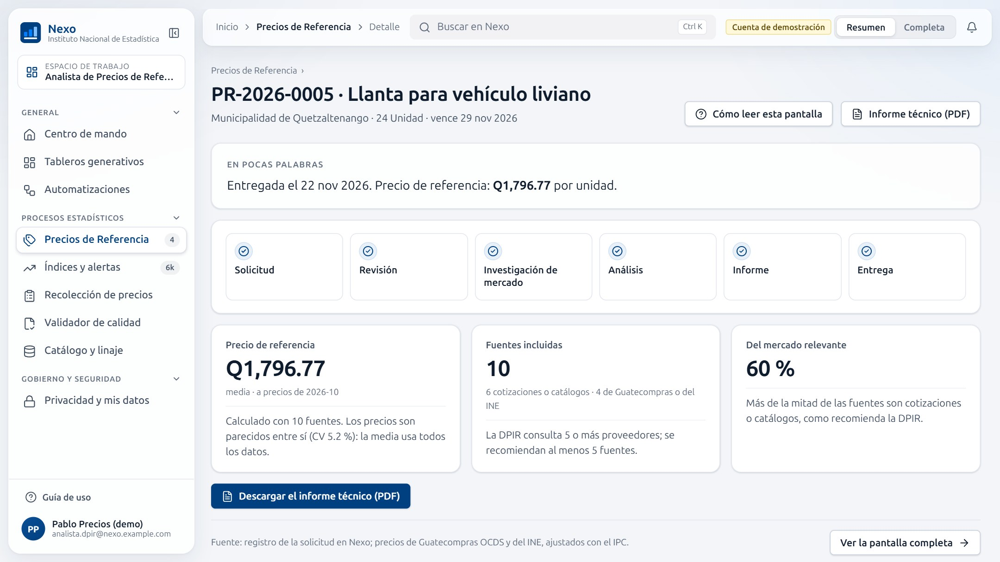
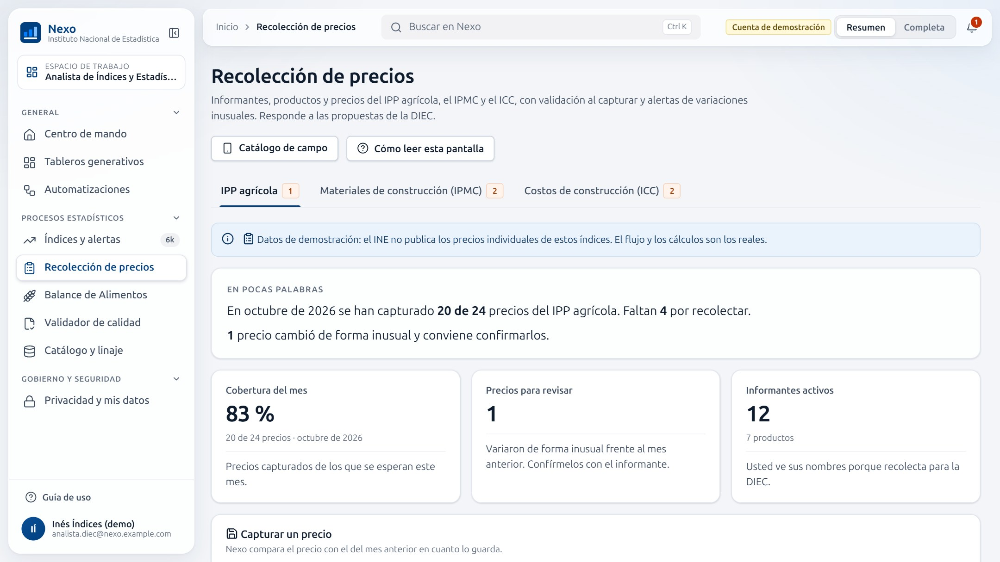
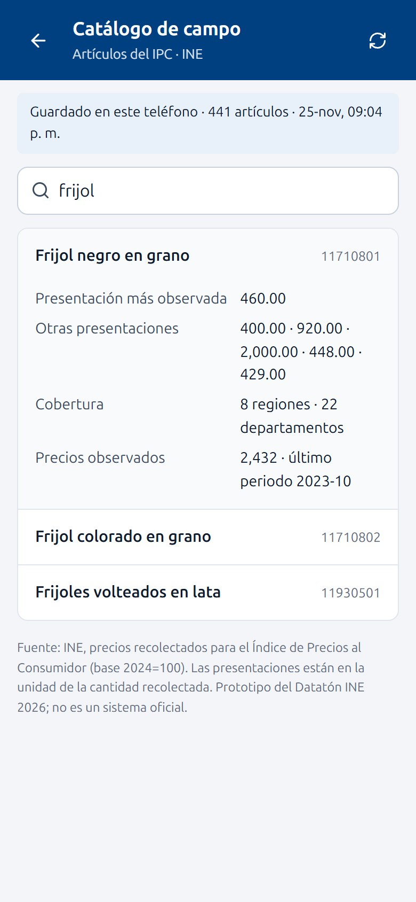
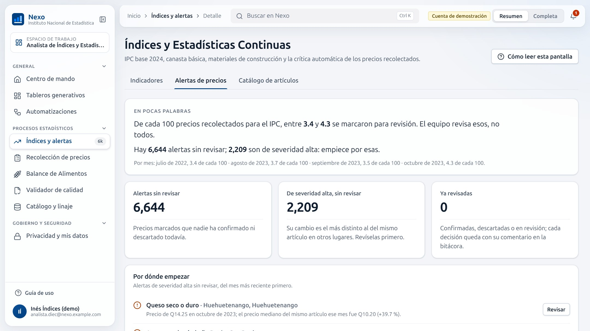
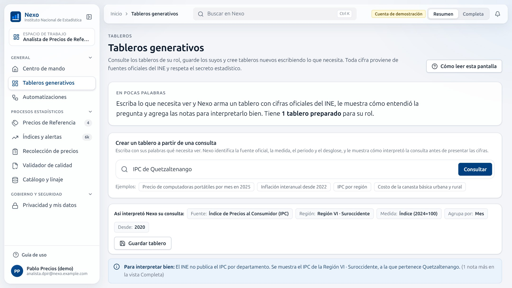
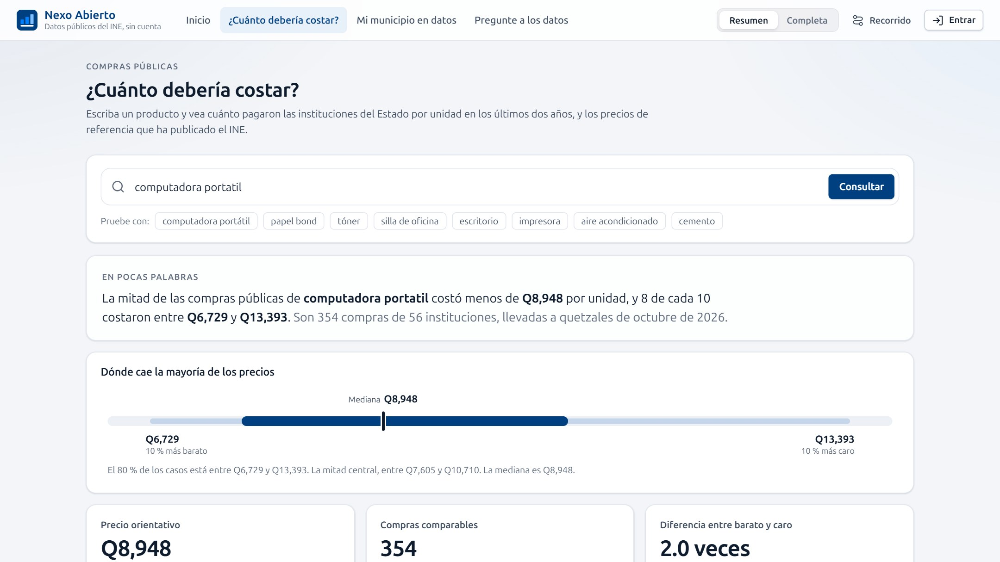
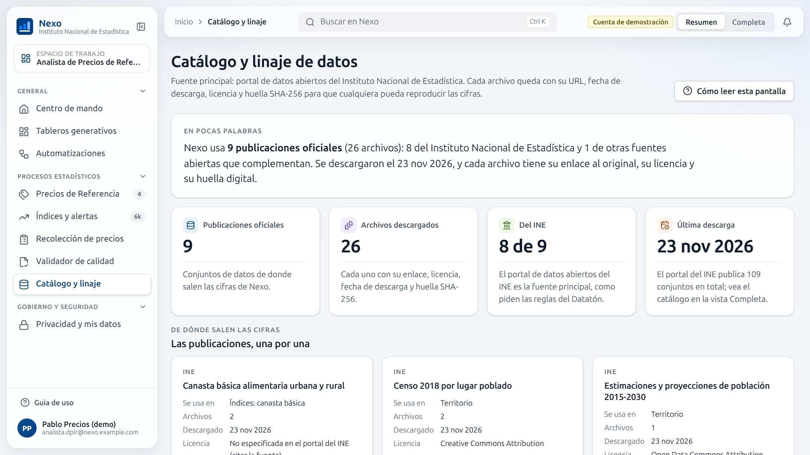

Nexo
Una sola plataforma para los procesos del INE: precios de referencia, índices y recolección de precios, territorio y calidad de datos. Con su metodología, sus datos y software libre.
Categoría 2 · Tecnológica y ciencias de datosJosue David Sajche Boror · Jeferson Andre Cano López · Angel David Siliezar López · Ricardo Javier González Corado
Datatón INE 2026 · Prototipo, no es un sistema oficial del INEFuente de los datos: Instituto Nacional de Estadística
El problema
El Estado paga precios muy distintos por lo mismo
Computadoras portátiles compradas por el Estado en 2024 y 2025, según Guatecompras, en quetzales de octubre de 2026 y sin compras atípicas:
354
compras de 56 instituciones
Q8,948
pagó la compra del medio (mediana) por unidad
2 veces
más pagó el 10 % más caro (Q13,393 o más) que el 10 % más barato (Q6,729 o menos)
Para eso existen los precios de referencia del INE. Hoy la DPIR los investiga a mano, para cualquiera de las 559 instituciones que compran en Guatecompras.
Cálculo de Nexo con Guatecompras OCDS (CC BY 4.0), ajustado con el IPC del INE
La solución
Lo que pidieron las Direcciones el 23 de noviembre, en una sola plataforma
| Dirección | Lo que pidió | Lo que hace Nexo |
|---|
| DPIR | Digitalizar los 6 pasos; media, mediana y moda; más del 50 % de fuentes del mercado relevante | Flujo completo con investigación automática en 214 mil compras públicas e informe PDF trazable |
| DIEC | Alertas de precios del IPP; sistema para IPMC e ICC; Manual de Características en el teléfono; calculadora de la HBA | Recolección de precios con alertas al capturar, catálogo de campo que funciona sin internet, alertas Hidiroglou-Berthelot y calculadora HBA |
| DESA | Tableros dinámicos y validación de bases con licencia libre | Tableros que se arman escribiendo y un validador con las reglas de la DCE |
| DCE · DCR | Datos por municipio y lugar poblado; avance de las 22 delegaciones | 340 fichas municipales, mapa de 20,036 lugares poblados y avance por delegación |
Y Nexo Abierto, sin cuenta, para la ciudadanía, la prensa y las municipalidades.
754,705 registros oficiales de 25 archivos del portal de datos abiertos del INE, más Guatecompras
Precios de Referencia · DPIR
Los 6 pasos de la DPIR, en segundos y con su metodología
- Investigación automática: compras comparables de Guatecompras con su NOG y precios históricos del INE, ajustados con el IPC.
- Su regla: si menos del 50 % de las fuentes son cotizaciones del mercado relevante, el informe exige una justificación.
- Media, mediana o moda con el criterio de su presentación: la mediana cuando hay precios extremos.
- Informe PDF trazable con huella SHA-256. Decide el analista: es un borrador, no el precio oficial.

Ejemplo de demostración: compras reales de Guatecompras y cotizaciones de demostración
Índices y Estadísticas Continuas · DIEC
Recolección de precios y catálogo en el teléfono

- Informantes, productos y precios de los tres índices, con el mismo flujo.
- Al capturar, Nexo dice cuánto varió el precio y si conviene confirmarlo (Hidiroglou-Berthelot).
- Cobertura y pendientes del mes. El nombre del informante solo lo ve la DIEC.

Catálogo de campo: 441 artículos del IPC. Se instala en el teléfono y funciona sin internet.
Precios del IPP, IPMC e ICC de demostración: el INE no los publica de forma individual
Crítica de precios del IPC
De cada 100 precios, el equipo revisa 3 o 4, no todos
- La DIEC recolecta más de 112 mil precios en más de 20 mil fuentes para el IPC.
- Nexo aplica Hidiroglou-Berthelot a los precios recolectados publicados y marca los cambios inusuales.
- Cada alerta se confirma o se descarta con un comentario que queda en la bitácora.
- Secreto estadístico: se suprime toda celda con menos de 5 informantes, también su conteo.

INE, precios recolectados para el IPC (julio de 2022 y 2023)
Tableros generativos
Escriba lo que necesita ver. Nexo no inventa cifras

- «IPC de Quetzaltenango» → muestra la Región VI y avisa que el INE no publica el IPC por departamento.
- Muestra cómo entendió la petición: fuente, medida, periodo y desglose.
- Determinista: sin chatbot, sin costos y sin que los datos salgan del INE.
Capa semántica con lista blanca de fuentes y reglas de rigor del INE
Nexo Abierto · sin cuenta
La misma información, para cualquier persona
- ¿Cuánto debería costar? Lo que pagó el Estado por un producto, con la mediana y el rango.
- Mi municipio en datos: 340 fichas con el Censo 2018 y las proyecciones, con la cita lista para copiar.
- Pregunte a los datos: tableros solo con fuentes públicas.
- Cada cifra enlaza al archivo original del INE. Solo lectura y con límite de consultas.

Responde al objetivo general del Datatón: acercar la información pública a la población
Confianza
Cada número tiene origen, fecha y huella
- Linaje: cada archivo con su URL, fecha de descarga, licencia y SHA-256.
- Bitácora encadenada con HMAC: detecta alteraciones y borrados.
- Seguridad: Argon2id, segundo factor, 11 roles con segregación de funciones.
- Calidad: 40 pruebas automáticas en SQLite y PostgreSQL en cada cambio, con auditoría de dependencias.

Prototipo sin prueba de penetración externa; los riesgos y controles están documentados en la plataforma
Adopción
El INE puede empezar mañana, por módulos
Q0
en licencias: Python, PostgreSQL y React, todo libre
1
máquina virtual con Docker, o un comando en Windows
Sin internet
funciona con los datos procesados y su manifiesto
1. Precios de ReferenciaEmpezar con la DPIR y sus solicitudes reales.
2. RecolecciónCargar los informantes reales del IPP, IPMC e ICC.
3. Manual de CaracterísticasCargar el texto oficial al catálogo de campo.
4. Acceso institucionalInicio de sesión con la cuenta del INE.
Instalación y dependencias en el README del repositorio
Gracias
Nexo: los procesos del INE en una sola plataforma, con su metodología, sus datos y software libre.
Repositoriogithub.com/Astral910/nexo-ine
Uso de IA declarado en el README (Claude Code como asistente de programación).
Datatón INE 2026 · Categoría 2Fuente de los datos: Instituto Nacional de Estadística